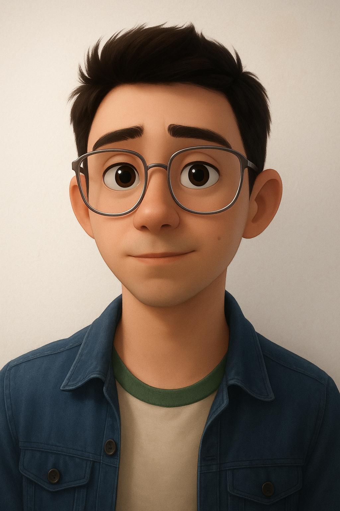

Sobre mí
Soy Daniel, diseñador gráfico en comunicación visual. Para mí, el diseño no es solo una profesión, sino una forma de interpretar lo cotidiano, de traducir ideas en lenguaje visual y generar impacto a través de lo estético y lo funcional. Me apasiona crear piezas que no solo se vean bien, sino que comuniquen, conecten y dejen huella.Trabajo desde la observación, la sensibilidad visual y el deseo constante de transformar conceptos en experiencias. Cada proyecto representa un nuevo reto, una nueva oportunidad para equilibrar intuición, estrategia y emoción.
- Experiencia:
-Diseñador Gráfico Freelance | 2023– Actualidad
-Creación de identidades visuales para clientes independientes
-Diseño de materiales gráficos para redes sociales y publicidad digital.
-Desarrollo de piezas creativas para campañas de marketing.
-Edición y retoque fotográfico para proyectos profesionales - Especialidad:-Identidad de marca, tipografía ,diseño editorial, diseño deportivos, packaging, composición visual, edición y tratamiento de imagen
- Herramientas:-Adobe Illustrator, Photoshop, InDesign,Figma, Visual Studio Code ,Blender 3D,Google Slides,Microsoft Office, Marketing digital
- Ciudad: Canelones, Uruguay